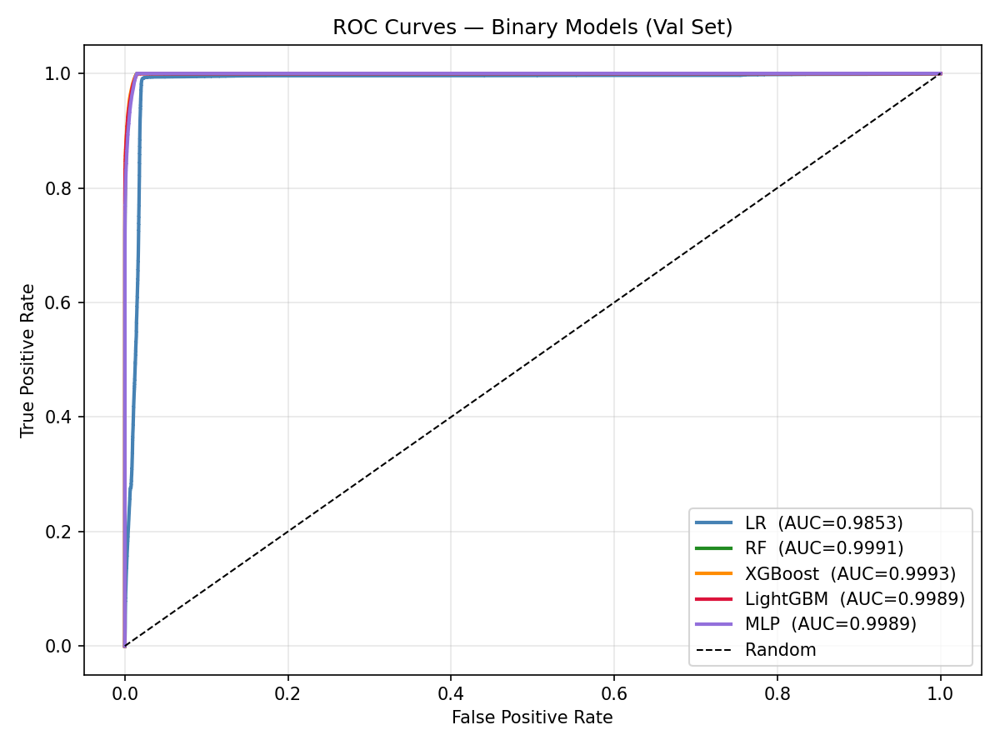
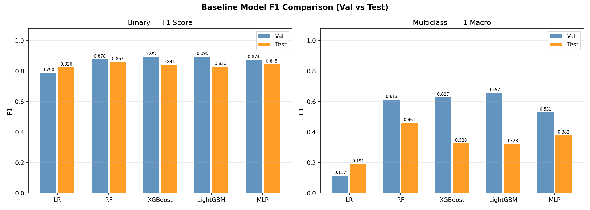
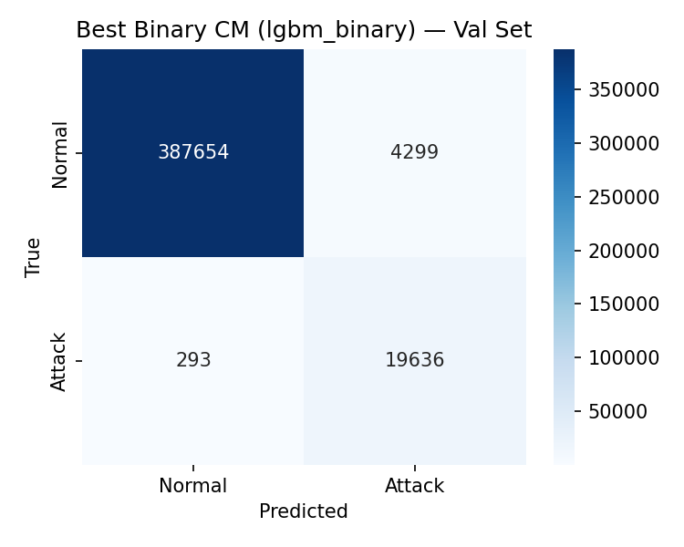
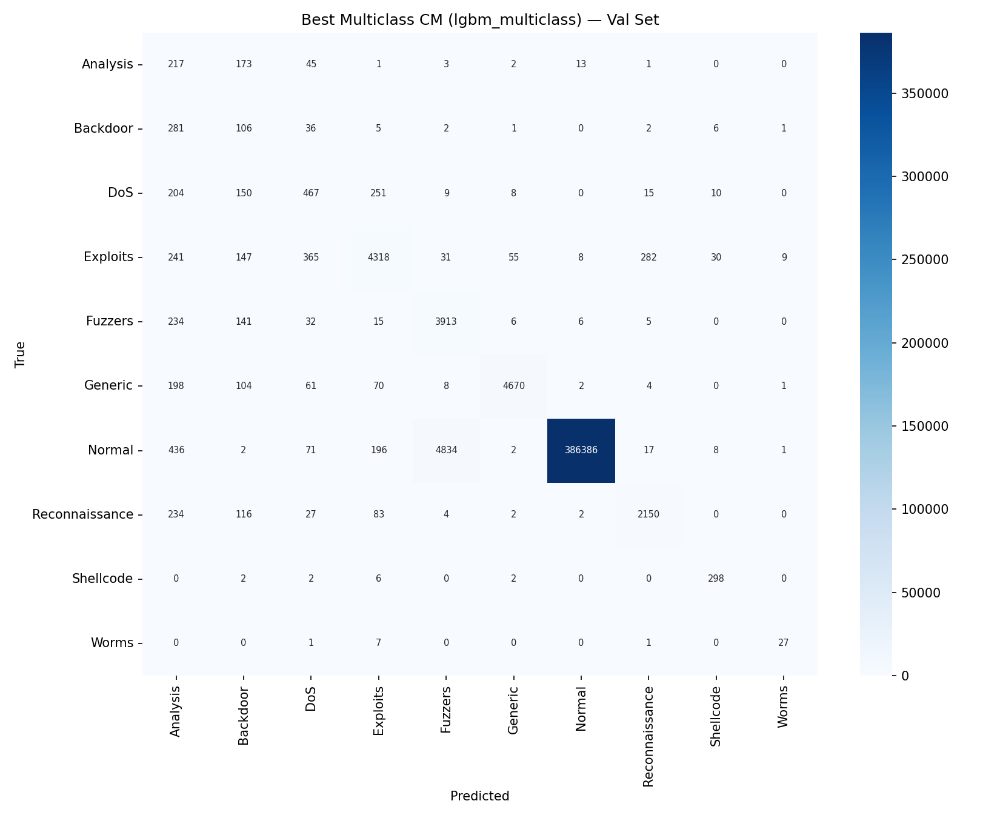
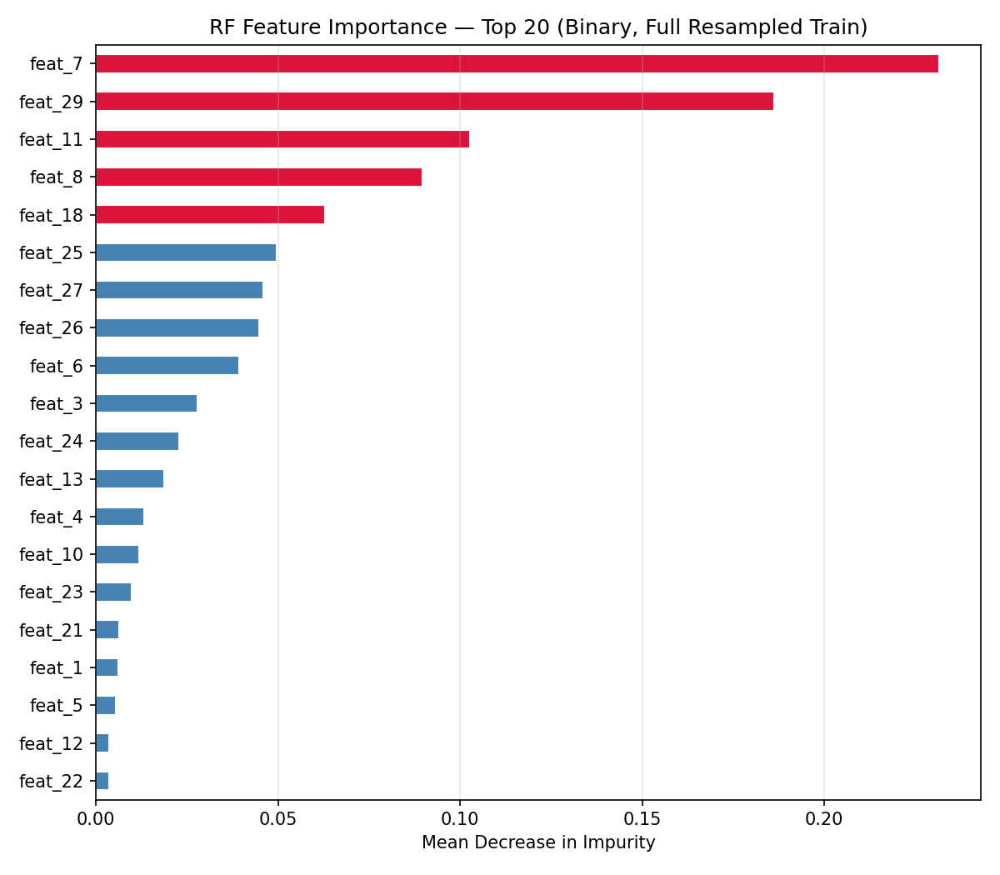
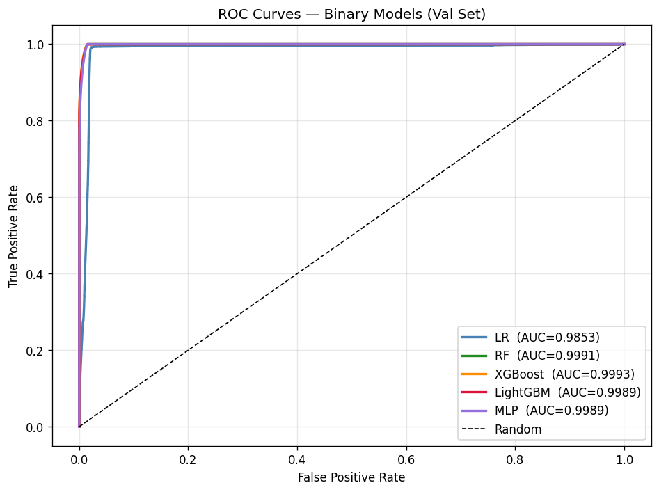
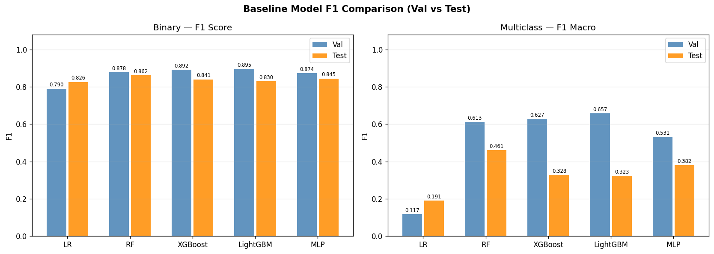
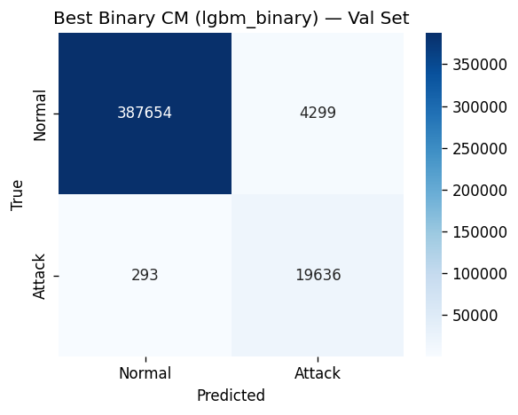
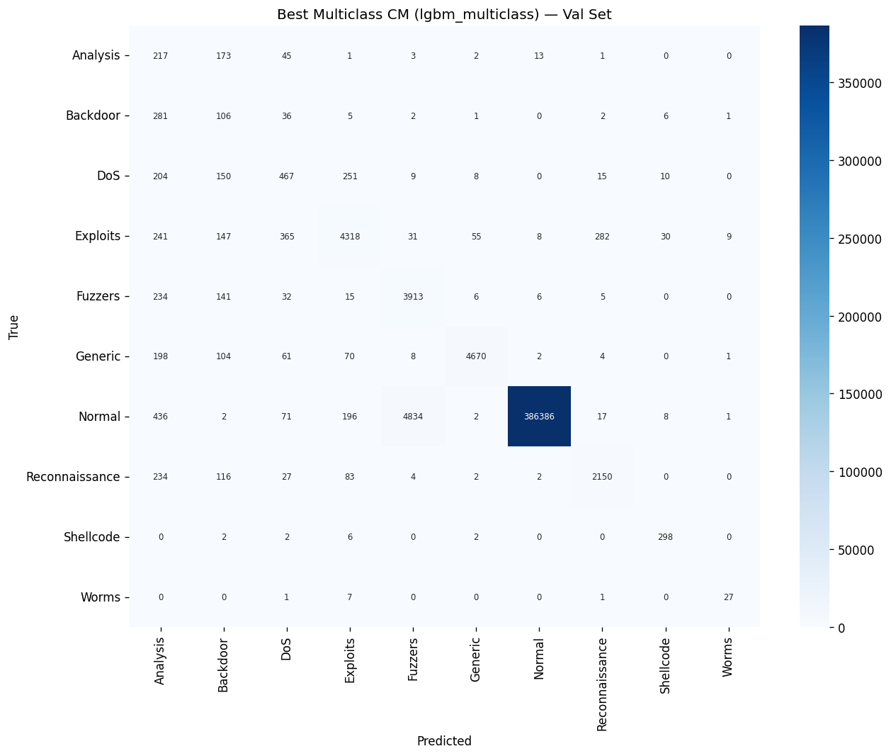
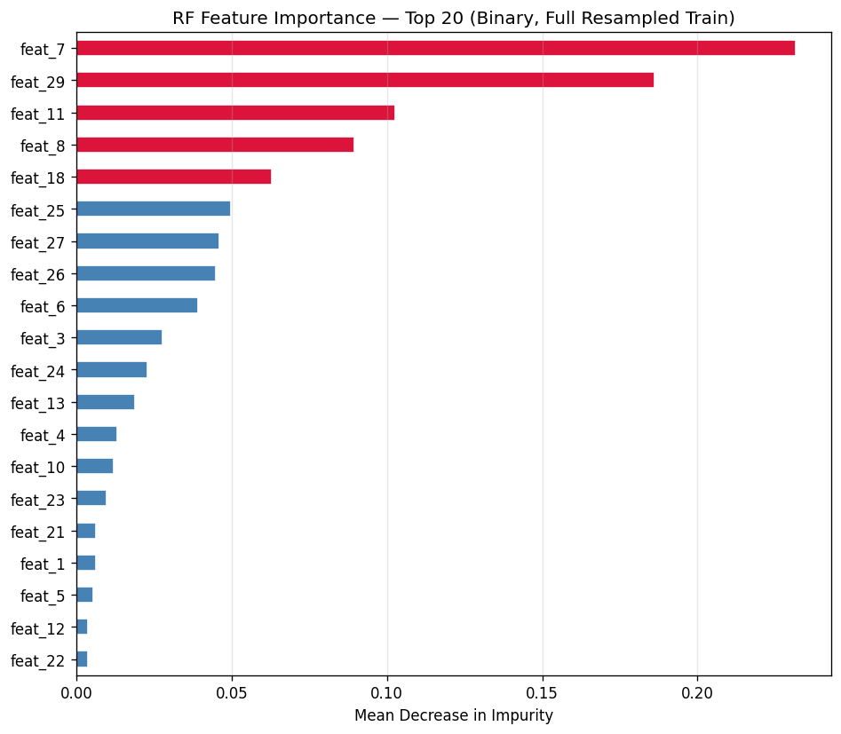

Phase 4
Baseline Models
Five classical ML models trained on the 37 tabular features with RandomizedSearchCV hyperparameter optimisation. Results serve as the target benchmark that GNN variants must beat or match. All models trained on Kaggle (GPU T4 × 2, 30 GB RAM).
✓ Complete — 5 models × 2 tasks🤖 Models & HPO Strategy
| Model | Search Method | Iterations | CV Folds | Subsample |
|---|---|---|---|---|
| Logistic Regression | RandomizedSearchCV | 8 | 3 | 200k |
| Random Forest | RandomizedSearchCV | 8 | 3 | 200k |
| XGBoost | RandomizedSearchCV + early stopping | 10 | 3 | 200k |
| LightGBM | RandomizedSearchCV + early stopping | 10 | 3 | 200k |
| MLP (PyTorch) | Manual architecture search (4 configs) | — | — | 200k |
HPO on 200k stratified subsample.
Full training set (~3.1M resampled for binary) is too large for cross-validated search.
HPO uses a 200k stratified subsample; final model is then refit on the complete resampled training data.
XGBoost and LightGBM use
early_stopping_rounds=50 on the validation set.
🎯 Binary Detection — Validation Set (attack ratio 4.84%)
| Model | Accuracy | Precision | Recall | F1 | ROC-AUC | FPR |
|---|---|---|---|---|---|---|
| Logistic Regression | 0.9745 | 0.6559 | 0.9931 | 0.7901 | 0.9853 | 0.0265 |
| Random Forest | 0.9866 | 0.7841 | 0.9979 | 0.8782 | 0.9991 | 0.0140 |
| XGBoost | 0.9884 | 0.8112 | 0.9910 | 0.8922 | 0.9993 | 0.0117 |
| LightGBM | 0.9889 | 0.8204 | 0.9853 | 0.8953 | 0.9989 | 0.0110 |
| MLP | 0.9860 | 0.7757 | 0.9997 | 0.8736 | 0.9989 | 0.0147 |
🎯 Binary Detection — Test Set (attack ratio 55.06%)
| Model | Accuracy | Precision | Recall | F1 | ROC-AUC | FPR |
|---|---|---|---|---|---|---|
| Logistic Regression | 0.7702 | 0.7072 | 0.9942 | 0.8265 | 0.6485 | 0.5043 |
| Random Forest | 0.8233 | 0.7572 | 0.9997 | 0.8617 | 0.9691 | 0.3928 |
| XGBoost | 0.7911 | 0.7250 | 0.9999 | 0.8405 | 0.9745 | 0.4646 |
| LightGBM | 0.7740 | 0.7093 | 0.9990 | 0.8296 | 0.9375 | 0.5017 |
| MLP | 0.7977 | 0.7314 | 0.9997 | 0.8448 | 0.9769 | 0.4498 |

ROC Curves — All 5 Baseline Models
ROC curves for binary classification on both val (solid) and test (dashed) sets.
On validation, all models except LR cluster near the top-left with AUC > 0.998.
On the test set, the curves spread significantly — RF and XGBoost maintain high AUC (0.97–0.97)
while LR drops to 0.65. The strong val→test AUC stability for tree models confirms that
gradient-boosted ensembles are robust to the class distribution shift,
likely because they rely on feature thresholds that remain discriminative across distributions.

F1 Score Comparison — Val vs Test
Grouped bar chart comparing val F1 and test F1 for all 5 models on both binary and multiclass
tasks. The val→test F1 drop is moderate for tree models (−0.03 to −0.06 for binary) but severe
for LR (−0.036 binary, but −0.57 multiclass F1-macro). MLP achieves near-RF performance on test
binary (0.845 vs 0.862) suggesting neural networks generalise well to the shifted distribution.
📊 Confusion Matrices — Best Models

Confusion Matrix — Best Binary Model: LightGBM (Test Set)
LightGBM binary confusion matrix on the test set (55.06% attack). High recall (0.999) means
almost all attacks are detected — very few false negatives. However, the elevated FPR (0.50)
means roughly half of normal flows are incorrectly classified as attacks.
This recall-precision trade-off is expected when a model trained on 4.84% attack data
encounters 55% attack — the decision threshold is calibrated for low attack prevalence
and becomes miscalibrated at the higher test prevalence.

Confusion Matrix — Best Multiclass: LightGBM (Test Set)
10-class confusion matrix. Strong diagonal for Normal (87% correctly classified) and
Generic (98%). However, Analysis, Backdoor, and DoS show significant off-diagonal confusion,
primarily being misclassified as Exploits or Normal. Shellcode and Worms collapse to near-zero
test F1 due to extreme rarity in both training and test sets. The multiclass task is fundamentally
harder than binary under distribution shift because inter-class boundaries also shift.
🏷️ Multiclass Detection (10 Classes)
Validation Set
| Model | Accuracy | F1-Macro | F1-Weighted |
|---|---|---|---|
| Logistic Regression | 0.4823 | 0.1168 | 0.6252 |
| Random Forest | 0.9779 | 0.6131 | 0.9816 |
| XGBoost | 0.9840 | 0.6273 | 0.9845 |
| LightGBM | 0.9773 | 0.6574 | 0.9814 |
| MLP | 0.9713 | 0.5309 | 0.9766 |
Test Set
| Model | Accuracy | F1-Macro | F1-Weighted |
|---|---|---|---|
| Logistic Regression | 0.4053 | 0.1913 | 0.4053 |
| Random Forest | 0.6862 | 0.4605 | 0.7295 |
| XGBoost | 0.6118 | 0.3276 | 0.6450 |
| LightGBM | 0.5877 | 0.3234 | 0.6324 |
| MLP | 0.6389 | 0.3815 | 0.6938 |
🏷️ Per-Class F1 — LightGBM Multiclass (Val vs Test)
| Class | Val F1 | Test F1 | Δ (drop) |
|---|---|---|---|
| Analysis | 0.1736 | 0.1065 | −0.067 |
| Backdoor | 0.1535 | 0.1487 | −0.005 |
| DoS | 0.4205 | 0.1555 | −0.265 |
| Exploits | 0.8274 | 0.4889 | −0.339 |
| Fuzzers | 0.5949 | 0.2808 | −0.314 |
| Generic | 0.9467 | 0.9798 | +0.033 |
| Normal | 0.9928 | 0.6530 | −0.340 |
| Reconnaissance | 0.8440 | 0.4212 | −0.423 |
| Shellcode | 0.9003 | 0.0000 | −0.900 |
| Worms | 0.7200 | 0.0000 | −0.720 |
Shellcode and Worms collapse to F1=0 on test — both rare attack categories
(1,511 and 174 training samples respectively) have zero test examples for the classes as they
appeared in training, resulting in complete classification failure on the shifted test distribution.
Generic is the one class that actually improves on test (+0.033) because it dominates the
test attack distribution.
⭐ Random Forest Feature Importance

Top-20 Feature Importances from Random Forest (Binary, Full Model)
Feature importances from the fully trained RF binary classifier.
sttl and
ct_state_ttl dominate — confirming the EDA finding that TTL-based features
are the strongest attack discriminators. Connection-tracking features
(ct_dst_src_ltm, ct_dst_sport_ltm, ct_srv_dst)
rank highly because they capture session-level traffic patterns that distinguish
scanning/flooding attacks from normal browsing. Byte/packet counts
(sbytes, dbytes, Dpkts) also contribute significantly —
attack flows tend to have distinctive volume profiles (very large for DoS, very small for
Reconnaissance stealth scans).
⚙️ Best Hyperparameters Found
| Model | Task | Best Configuration |
|---|---|---|
| Logistic Regression | Binary | C=0.001, solver=lbfgs, penalty=l2 |
| Logistic Regression | Multiclass | C=1.0, solver=lbfgs |
| Random Forest | Binary | n_estimators=300, max_depth=20, max_features=sqrt, min_samples_split=2, min_samples_leaf=1 |
| Random Forest | Multiclass | n_estimators=200, max_depth=30, max_features=sqrt, min_samples_split=10, min_samples_leaf=2 |
| XGBoost | Binary | max_depth=10, lr=0.05, n_est=500, subsample=0.8, colsample=0.6, gamma=0.2, reg_α=0.01, reg_λ=2.0 |
| XGBoost | Multiclass | max_depth=8, lr=0.03, n_est=300, subsample=0.8, colsample=1.0, reg_λ=0.5 |
| LightGBM | Binary | num_leaves=255, lr=0.15, n_est=300, subsample=0.8, colsample=0.8, min_child=10 |
| LightGBM | Multiclass | num_leaves=31, lr=0.1, n_est=200, subsample=0.6, colsample=0.8, min_child=10 |
| MLP | Binary | hidden=(512,256,128), lr=1e-3, dropout=0.3, max_epochs=30, early_stop=5 |
| MLP | Multiclass | hidden=(256,128), lr=1e-3, dropout=0.3, max_epochs=30, early_stop=5 |
📓 Additional Training Outputs (Kaggle Notebook)

Notebook Output — Cell 24
Training progress or evaluation output from Kaggle notebook cell 24 — likely HPO search results or cross-validation scores for one of the baseline models.

Notebook Output — Cell 25
Training or evaluation output from Kaggle notebook cell 25 — likely model performance metrics or learning curves from HPO best configuration training.

Notebook Output — Cell 26 (Output 1)
First output from notebook cell 26 — likely a comparison chart or evaluation metric summary across multiple models.

Notebook Output — Cell 26 (Output 3)
Third output from notebook cell 26 — likely a secondary evaluation chart, such as precision-recall curves or a per-class metric breakdown.

Notebook Output — Cell 27
Output from notebook cell 27 — likely the final summary plot or per-model comparison dashboard from the baseline training notebook.
🔑 Phase 4 — Key Findings
- LightGBM best on val binary (F1=0.8953, AUC=0.9989) — gradient boosting excels at tabular flow features with a well-tuned learning rate and high leaf count.
- Random Forest best on test binary (F1=0.8617, AUC=0.9691) — RF's bagging ensemble generalises better to the shifted 55% attack distribution than single-pass boosting.
- Smallest val→test F1 drop: RF (−0.022) vs LightGBM (−0.066). RF's variance reduction via averaging makes it more robust to distribution shift.
- High recall (≥0.985) across all models on both splits — SMOTE-trained models achieve excellent attack detection rate. The challenge is controlling FPR at the shifted prevalence.
- Shellcode and Worms: F1=0 on test for all models due to combined rarity and distribution shift. These classes need specialised oversampling or anomaly detection approaches.
- LR multiclass failure (F1-macro=0.117 val) — linear decision boundaries cannot separate 10 non-linearly distributed attack categories. Non-linear models required.